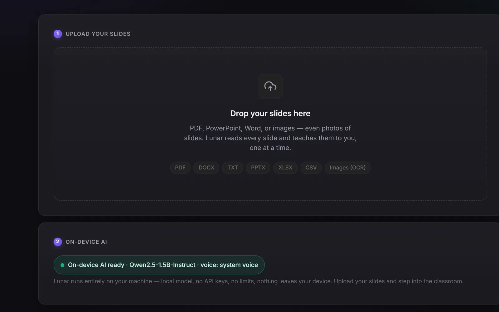

01
Bring any lecture file.
Drop in a PDF, a PowerPoint, a Word document, a spreadsheet, or even photos of slides. Lunar reads every page, with built-in OCR for scanned and image-only slides.
PDFPPTXDOCXXLSXCSVTXTImages (OCR)
